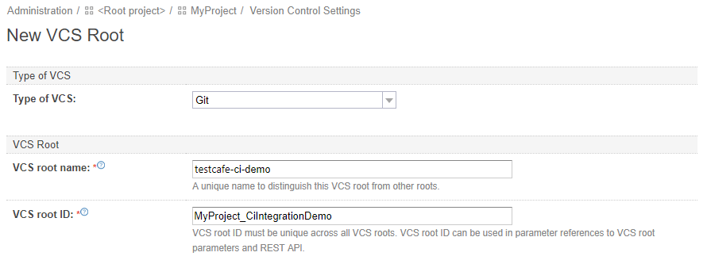

Integrating TestCafe with TeamCity CI System
TestCafe is easy to set up with most modern CI systems.
This topic describes how to use TestCafe with TeamCity.
Prerequisites #
Before starting this tutorial, install TestCafe and the TeamCity reporter plugin.
npm install -g testcafe testcafe-reporter-teamcityThe
testcafe-reporter-teamcityplugin enables TestCafe to output test run results in the TeamCity format. The reports will be presented in the TeamCity UI allowing you to analyze the results with its built-in features.We will fetch test code from a GitHub repository: ci-integration-demo. Fork it before starting.
If you use a different version control system, make sure TeamCity supports it. You can find a list of supported VCS in the TeamCity documentation.
Adding a Build Step that Runs TestCafe #
Create a new build configuration or open an existing one as described in the TeamCity documentation.
Click the Edit Configuration Settings link.
In the configuration settings, add a build step that runs TestCafe. First, select Build Steps from the left menu.

This opens the Build Steps page. On this page, click the Add build step button.

The New build step page will be opened. Configure this step to run TestCafe using the command line.
In the Runer type field, select Command Line. Optionally, specify a name for this step. In the Run parameter, select Executable with parameters. Type testcafe into the Command executable box and add the following arguments in the Command parameters field: chrome tests/**/* -r teamcity.
Parameters used in this example specify Google Chrome as the target browser, tests as the folder that contains test fixtures and TeamCity reporter as a plugin used to output test run reports.

Click Save.
Fetching Test Code #
First, you will need to create a connection with GitHub.com.
Open project settings and click Connections.

On the Connections page, click Add Connection.
The Add Connection dialog will be invoked.
Select GitHub.com as the Connection type and click Register TeamCity to set up OAuth authentication with GitHub.

You will be redirected to GitHub. In the Register a new OAuth application dialog, specify the application name, homepage URL and authorization callback URL as they are provided by TeamCity and click Register application.

A page with client application ID and secret will open.

Copy and paste them to TeamCity and click Save.

Now the connection is created.
Next, attach a VCS root to the build configuration.
Go to the configuration parameters and click Version Control Settings.
On the VCS Roots page, click Attach VCS root.
Select Git as the Type of VCS. Enter the Root name.

In the Fetch URL field, click the GitHub logo. A drop-down list of GitHub repos associated with your account will open. Select ci-integration-demo.
In the Authentication Settings section, select Password as the Authentication Method, enter your credentials and click Create.

Now the TeamCity build configuration will fetch tests from the ci-integration-demo repo each time it runs.
Running the Build #
Now you can run the build using the Run button.

Viewing Test Results #
Open the Overview tab and see which tests failed and why.